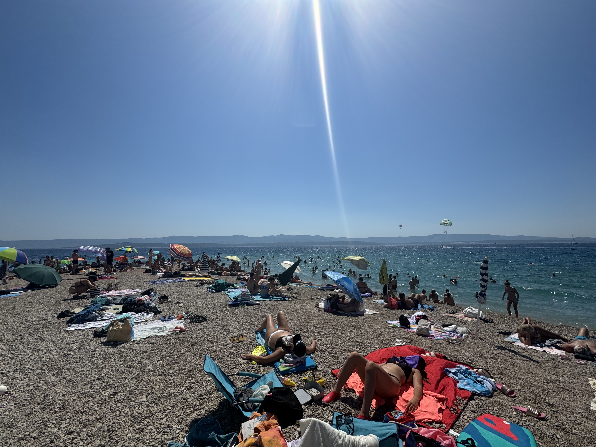
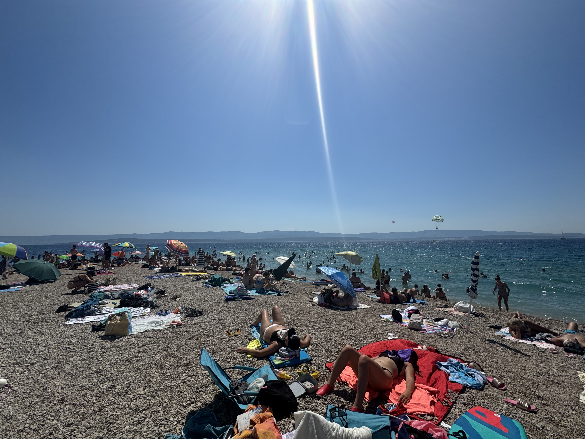
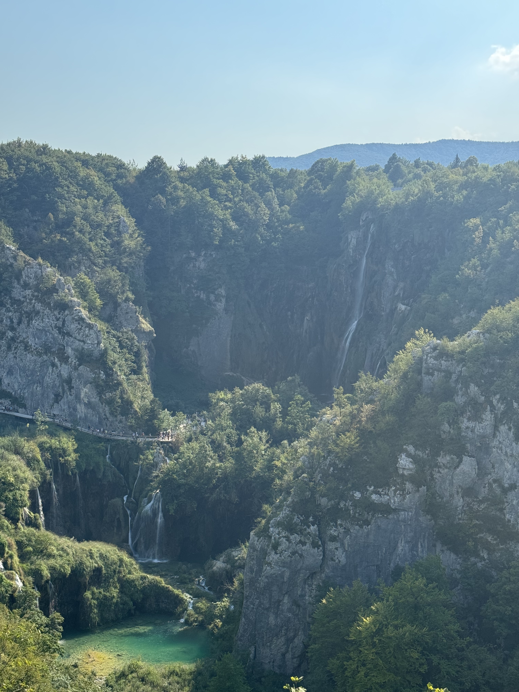
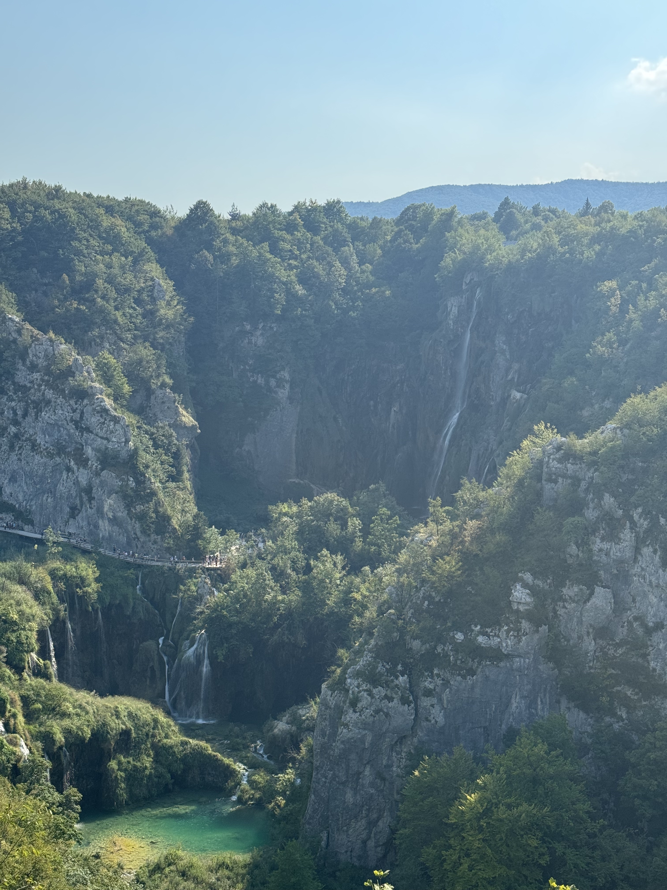

Split
On the day of my arrival, I checked into my hostel in Split and went straight to Kasjuni Beach. It set the tone for my time in Croatia, absolutely stunning and relaxing. The beach is a few miles North of the city, so I had to take a bus or taxi to get there. I decided on the bus because I had great luck with public transportation on the trip so far. This bus was different, completely packed to the brim with people shoulder to shoulder as more and more people hopped on at each stop. On the way back to the hostel, I split an XL taxi with five strangers because we would have had to wait for a few buses as there were so many people waiting.
Bol, Brac
 

After a few days in Split I took a ferry boat to Bol on the island of Brac. It was only about a 45-minute slow ferry ride. Definitely a beach town vacation destination with small resorts and fancy restaurants. The beach was a peninsula with a point and two beaches on either side. It was so hot and sunny that I rotated between dips in the water, sunscreen, and beers both days I was there.
Plitvice Waterfalls
 

After Bol and before embarking on the sail, I took a day trip to Plitvice National Park, which had turquoise lakes and many waterfalls. It was a guided tour where we took a bus to the top of the mountain and then hiked down, seeing all the nature and wildlife. It reminded me a lot of California. Many tourists did the hike with children in strollers. I can’t imagine it was very fun for the children or parents because of the bumpy trail and many stairs.
Sail
Hvar is the number one party destination in Croatia. Everyone wore fancy outfits and got made up to go out and look their best. I went to Hula Hula Club, a swim bar, on the recommendation of a friend. The place didn't seem real. It had a DJ, lounge chairs, food, and swimming off the cliffs. Later that night, our boat went to a small dancing bar and then a silent disco, which was a ton of fun.

On sailing days we would sail slowly for 8 hours straight passing these rocky mountains. Just like the Hula Hula club, they didn’t seem real. The mountains looked like the backdrop of a play while on the water.
Makarska isn’t talked about enough. It was less crowded but just as fun as the other, more famous destinations. I had a fantastic night out with my boat at a street party. There was a DJ set up in the street outside some bars. That night, everyone from the boat wore matching sailor outfits, and we all partied together till the street got shut down. It was a great time because there were a lot of travelers from other sailboats there too.
This picture is from another swim bar in Dubrovnik with cliff jumping. The entrance was a small gate right off the sidewalk with basically no signage. You would never know the gate led to a bar with swimming and cliff jumping. Dubrovnik is pretty expensive and there are fortified walls surrounding the whole city. With no cars allowed inside the walls, there were tons of tourists walking around shopping, eating, and taking in the sites. The city has a ton of history from the recent wars with Yugoslavia as well as being the setting for the famous TV show Game Of Thrones.
Overall
To be honest, I expected a little more out of Croatia. It was super touristy and a little bit expensive. However a great party destination. I’m not sure if I would go back but I’m happy with my experience.